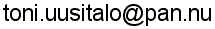

Parsifal download
Version 0.9.3
Cross platform win32/unix distribution - both files (*.zip and *.gz) have identical contents.
libparsifal-0.9.3.zip
libparsifal-0.9.3.tar.gz
xmlplint 1.0.0 binaries
(xmlplint sources are included in the library distribution)
xmlplint-win-bin-1.0.0.zip
You need also libiconv win32 binaries from
GNU.ORG libiconv. search for libiconv-1.9.1.bin.woe32.zip or similar.
Version 0.9.2
Cross platform win32/unix distribution - both files (*.zip and *.gz) have identical contents.
libparsifal-0.9.2.zip
libparsifal-0.9.2.tar.gz
Version 0.8.3
Cross platform win32/unix distribution - both files (*.zip and *.gz) have identical contents.
libparsifal-0.8.3.zip
libparsifal-0.8.3.tar.gz
Version 0.7.5 - Last version w/o DTD declaration events support
Cross platform win32/unix distribution - both files (*.zip and *.gz) have identical contents.
libparsifal-0.7.5.zip
libparsifal-0.7.5.tar.gz
Copyright © 2002-2005 Toni
Uusitalo.
Send mail, suggestions and bug reports to

Last modified: 18.08.2005 23:00